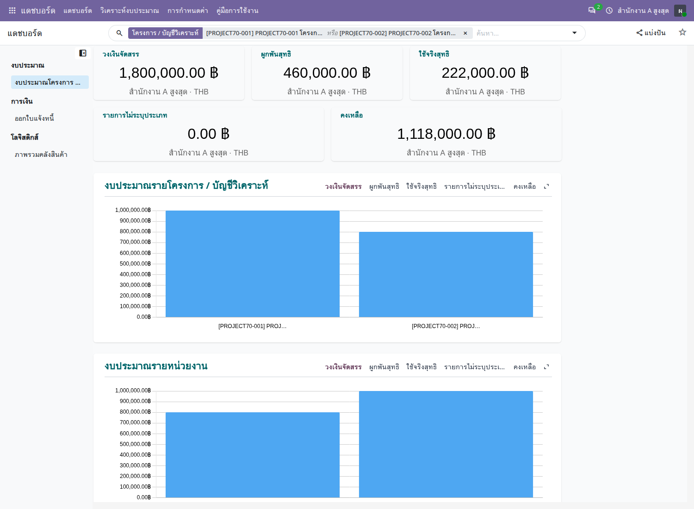
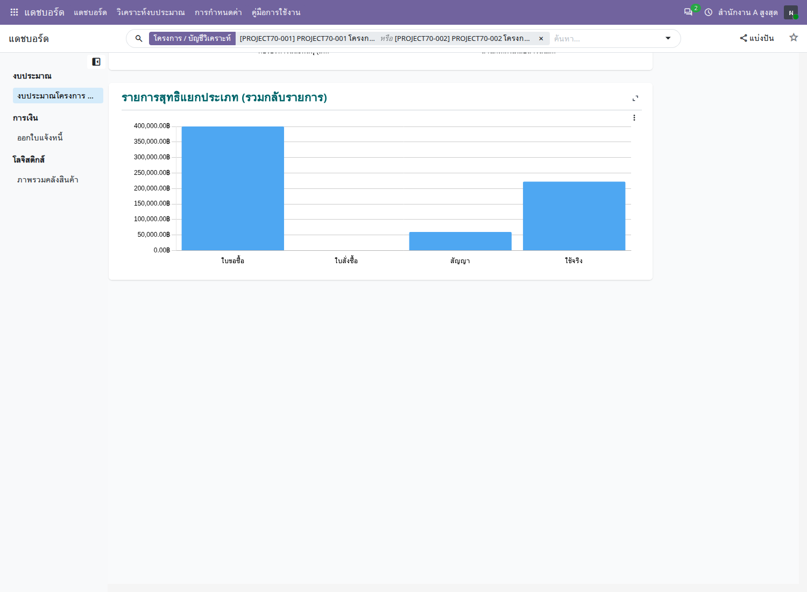
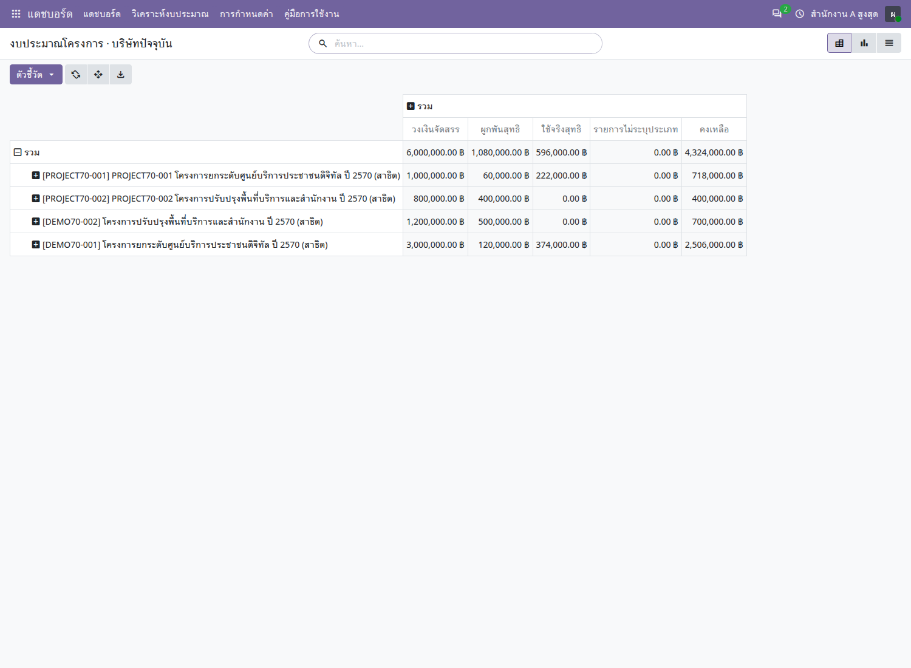

PROJECT70 · REAL ODOO REPLAY
ติดตามงานจริง
เข้าใจทั้งกระบวนการ
สำรวจโครงการ งบประมาณ จัดซื้อ สัญญา ตรวจรับ วัสดุ และครุภัณฑ์ ผ่านภาพการใช้งานและผลตรวจจากระบบสาธิต
กำลังโหลดหลักฐาน…
ข้อมูลตามตัวกรอง
ภาพบันทึกจากระบบสาธิต ไม่ได้เชื่อมต่อ Odoo ในหน้านี้
ผลตรวจจากการรันนี้
ตัวเลขประกอบอ่านจากข้อมูลที่บันทึกจริงใน Odoo ภาพด้านบนเป็นหน้าผลวงเงินจริง
ภาพรวมงบประมาณใน Dashboard ของ Odoo
เปิดแอปแดชบอร์ด → งบประมาณ → งบประมาณโครงการ แล้วกรอง PROJECT70-001 และ PROJECT70-002 ของสำนักงาน A สูงสุด ภาพนี้แสดงยอดรวมและกราฟจากข้อมูลสาธิตจริงใน Odoo

ดูกราฟแยกประเภทรายการ
รายการกลับรายการถูกรวมสุทธิในประเภทเดิม ใบสั่งซื้อที่เปลี่ยนเป็นใช้จริงแล้วจึงไม่ถูกนับผูกพันซ้ำ

ดู Pivot และวิธีเจาะรายละเอียด
เมนูวิเคราะห์งบประมาณ → งบประมาณโครงการ เปิด Pivot ของทุกโครงการที่มีสิทธิ์ เลือกมาตรวัดและจัดกลุ่มเพิ่มเติมได้ คลิกตัวเลขเพื่อเปิดรายการวงเงินต้นทาง ส่วนเมนูรายการงบประมาณแยกประเภทใช้ดูรายการผูกพันและใช้จริงแต่ละรายการ

ความสัมพันธ์เอกสารที่ตรวจพบ
ลิงก์ที่มีภาพบันทึกจะพาไปยังขั้นตอนนั้น รายการอื่นแสดงเฉพาะข้อมูลที่อ่านจาก Odoo